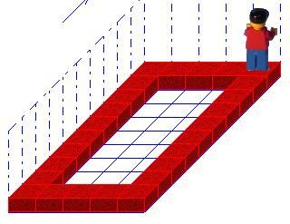
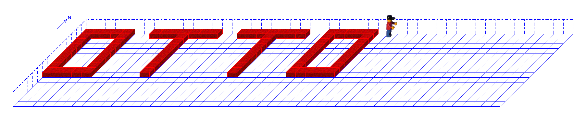

Wenn wir Programmteile oft benötigen (z.B. "Umdrehen" oder "Zur Wand laufen"), können wir dafür eine eigene Anweisung (auch Methode genannt) definieren. Das macht das Hauptprogramm übersichtlicher.
Programm Schritt(8)
Umdrehen Schritt(8)
EndeProgramm
Übung 1: Zur Wand legen
Weltgröße: 10x10x1
Implementiere ein Programm, welches Karol, unabhängig von seinem Standpunkt, eine Ziegelreihe bis zur nächsten Wand in seiner Blickrichtung legen lässt.
Karol steht in einer Ecke des Raumes (Blickrichtung entlang der Wand). Er soll einmal komplett im Kreis laufen und dabei die Wände mit Ziegeln markieren.
a) Der Rahmen
Nutze die Logik der bedingten Schleife aus Übung 1.
Definiere eine Anweisung ZiegelnUndLaufen. Optional kann auch nur die Sequenz aus Übung 1 genutzt werden.
Implementiere anschließend das Hauptprogramm, welches diese Anweisung nutzt, um alle vier Wände abzulaufen.

b) Mustergirlande
Ändere die Anweisung so ab, dass Karol eine Mustergirlande legt (nur jeden zweiten Ziegel).
Programm wiederhole 4 mal GirlandeLegen LinksDrehen
endewiederhole EndeProgramm
Übung 3: Lastentransport
Weltgröße: 10x10x10 (Höhe beachten!)
Entwerfe eine Sequenz, die es Karol ermöglicht, einen Ziegelstapel, der vor ihm steht, um drei Felder nach links zu versetzen. Der Ziegelstapel kann unterschiedlich hoch sein.
Entwerfe eine Sequenz mit der Karol alle Ziegelsteine aufhebt, die er auf seinem geraden Weg zur Wand vor sich sieht. Dabei dürfen sich auf jedem Feld beliebig viele Ziegelsteine befinden.
Programm wiederhole 4 mal SeiteBauen LinksDrehen
endewiederhole wiederhole 4 mal ZinnenSetzen LinksDrehen
endewiederhole EndeProgramm
Zusatz 2: Namensschild
Weltgröße: 30x30x1
Schreibe ein Programm, das den Namen OTTO mit Ziegeln auf den Boden schreibt.
Tipp: Erstelle für jeden Buchstaben eine eigene Anweisung (z.B. BuchstabeT), damit das Hauptprogramm kurz bleibt.

Lösung anzeigen
AnweisungBuchstabeO wiederhole 2 mal wiederhole 8 mal Hinlegen
Schritt
endewiederhole LinksDrehen
wiederhole 4 mal Hinlegen
Schritt
endewiederhole LinksDrehen
endewiederhole LinksDrehen
Schritt(6)
endeAnweisung